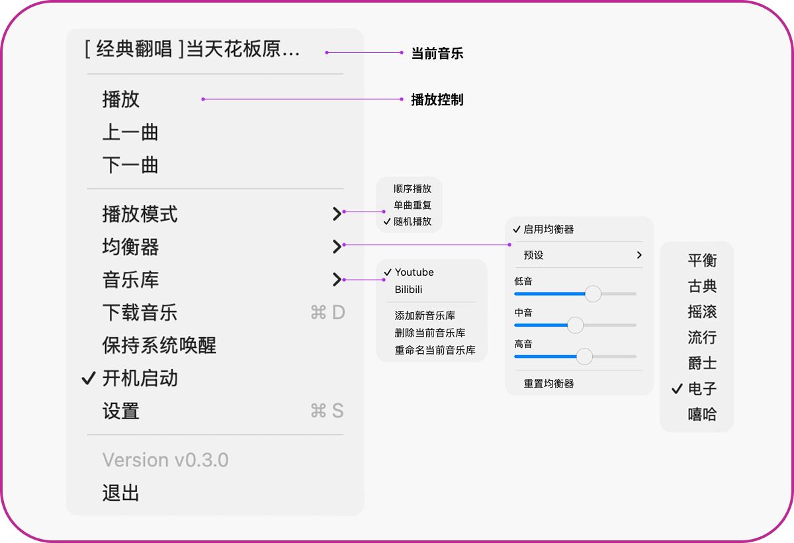

MacMusicPlayer
An elegant and minimalist music player for macOS, designed as a menu bar application to provide a seamless music playback experience. Built with SwiftUI, it perfectly integrates into the macOS ecosystem.


📦 Installation
Homebrew (Recommended)
brew tap samzong/tap
brew install mac-music-player
Download DMG
Download the latest MacMusicPlayer.dmg from the Releases page.
Security Note: If you encounter a security warning on first launch, right-click the app and select "Open", or run:
xattr -dr com.apple.quarantine /Applications/MacMusicPlayer.app
✨ Key Features
- 🵠Lightweight menu bar player for instant music control
- 🨠Native macOS interface with perfect light/dark theme support
- 🌠Multi-language support (English, Chinese, Japanese, Korean)
- 🧠Audio format support (mp3, m4a, wav, flac, aac, aiff, etc.)
- 🔄 Multiple playback modes (Sequential, Single Loop, Random)
- 📥 Download music from online sources (YouTube, SoundCloud, etc.)
- 💾 Smart memory of last music folder location
- 🚀 Launch at login support
- 😴 Prevent system sleep for uninterrupted music
- ⌨️ Media key control support
📷 Screenshots
Menu Items

Download Music

🛠Development
For detailed development guide, see: Developer Documentation
🤠Contributing
Contributions are welcome! Please feel free to submit Issues and Pull Requests.
📄 License
This project is licensed under the MIT License - see the LICENSE file for details.